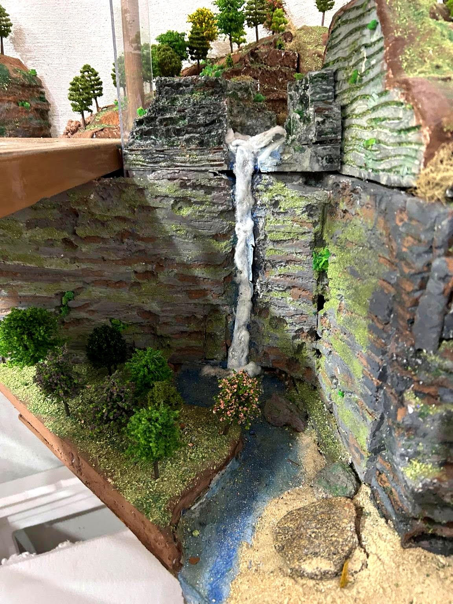

Cachoeira abaixo da escada caracol
Uma cachoeira pode ser construída de maneira simples, utilizando materiais fáceis de encontrar e obtendo um efeito bastante interessante no cenário.

- Faça inicialmente um molde de papel no formato desejado para a queda-d’água.
- Pinte o molde em tom de azul, procurando representar a cor da água.
- Depois que a tinta estiver seca, aplique uma camada de cola branca sobre a superfície e espalhe glitter. O brilho ajuda a produzir o efeito da luz refletida pela água.
- Para representar a água em movimento durante a queda, aplique pequenos pedaços de algodão, alongando as fibras no sentido da queda. Acrescente um pouco de glitter ao algodão para reforçar o aspecto de água corrente.
- Na base da cachoeira, coloque mais algodão, deixando-o irregular e volumoso para simular a espuma e os respingos produzidos pelo impacto da água.
A quantidade de algodão deve ser usada com moderação. O objetivo é sugerir a espuma e o movimento da água sem esconder completamente o fundo azul da cachoeira.